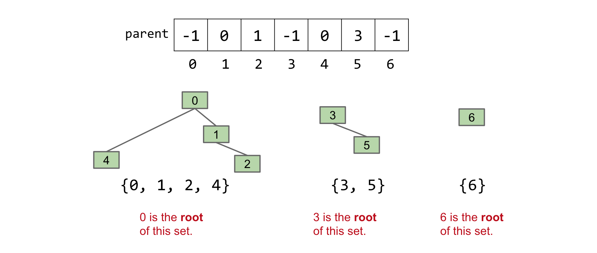
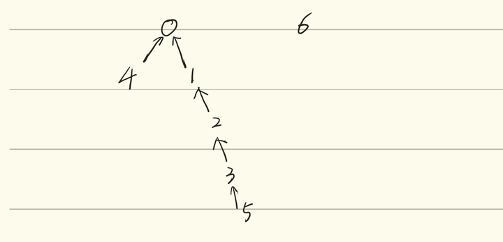

Chapter5 并查集
并查集简介¶
并查集¶
并查集（Union-Find/Disjoint Sets）是一种用于管理多个不相交子集的数据结构，其维护固定数量的元素，这些元素被划分为若干个不相交的子集，每个子集代表一个独立的集合。并查集的核心功能是通过合并子集(Union)和查询元素（Find）来动态管理这些集合。
在并查集中，每个元素初始时属于自己的独立子集，随着操作进行，子集可以通过合并操作逐渐组合成更大的集合，通常可以用来解决连通性问题。
并查集操作¶
并查集主要由两个核心操作组成：
1. connect(x,y)，也被称为 union：
其先找到 x 和 y 所在的子集，如果两者不在同一个子集中，就将这两个子集合并为一个新的子集。
例如，假设有元素 A,B,C,D，初始时每个元素在单独的子集中：{A},{B},{C},{D}，在调用connect(A,B)后，A 和 B 合并为一个子集：{A,B},{C},{D}，再调用connect{A,D}后，A 和 D 的子集合并，结果为 {A,B,D},{C}
2. isConnected(x,y)，也被称为find：
其用于检查元素 x 和 y 是否属于同一个子集（先确定 x 和 y 各自属于哪个子集，如果是同一个，就返回 true；如果不是同一个，就返回 false）
并查集接口¶
通常来说，一个接口决定了数据结构应该具有哪些行为，而不规定其具体的实现方式，这里我们给出并查集的 Java 接口：
这里 connect(int p, int q) 对应 union 操作，用于合并 p 和 q 所在的子集；而 isConnected(int p, int q) 对应 find 操作，用于判断 p 和 q 是否在同一子集中。
Tip
通常我们假设并查集存储的元素是非负整数，事实上实际应用中我们可以通过映射将任意对象转换为整数
并查集的实现¶
ListsOfSets（集合列表）¶
这种实现是将并查集表示为 元素为集合的列表，比如 List<Set<Integer>>，每个集合存储为一个 Set<Integer>，初始化为 N 个单元素集合，但是这样的缺点在于，connect(5,6) 这样的操作，我们需要遍历 N 个集合来找到5，N 个集合来找到6，这样时间复杂度就为 \(O(N)\) 了，除此之外，isConnected() 操作也同样需要遍历集合。除此之外，实现代码也非常的复杂
Quick Find¶
Quick Find 是一种简单的并查集实现，目的是让 isConnected(find) 操作变得高效。
其核心思想是使用一个整数数组来表示元素的集合归属，其中：
- 数组索引表示元素（从 0 到 N-1）
- 数组元素的值表示该集合所属的集合编号(set ID)，同一集合中的所有元素共享同一个集合编号，或者说对应数组元素的值相同。
例如，对于元素集合 {0,1,2,4},{3,5},{6}，我们可以用数组表示为
其中，id[0] = id[1] = id[2] = id[4] = 0 表示元素 0,1,2,4 属于同一个集合。
下面我们来看一下 Quick Find 操作的具体实现
构造函数 QuickFinDS(int N)¶
初始化 N 个元素的并查集（创建大小为 N 的数组 id），每个元素初始时属于自己的独立集合（赋值 id[i]=i），时间复杂度为 \(\Theta(N)\)，需要遍历数组进行初始化
Connect(x,y)¶
获取 x 的集合编号 pid = id[x] 和 y 的集合编号 qid = id[y]，然后遍历整个数组，将所有值为 pid 的元素改为 qid，从而将 x 的集合合并到 y 所在的集合。时间复杂度为 \(\Theta(N)\)，需要遍历整个数组
isConnected(x,y)¶
直接比较 id[x] 和 id[y] 是否相等，即可实现检查元素 x 和 y 是否在同一集合的功能。时间复杂度为 \(\Theta(1)\)，只需要进行一次比较
其具体代码如下：
public class QuickFinDS implements DisjiontSets{
private int[] id;
public QuickFinDS(int n){
id = new int[n];
for(int i = 0; i < n; i++){
id[i] = i;
}
}
public void connnect(int p, int q){
int pid = id[p];
int qid = id[q];
for(int i = 0; i < id.length; i++){
if(id[i] == pid){
id[i] = qid;
}
}
}
public boolean isConnected(int p, int q){
return id[p] == id[q];
}
}
| Implementation | 构造函数 | connect |
isConnected |
|---|---|---|---|
| ListOfSets | \(\Theta(N)\) | \(O(N)\) | \(O(N)\) |
| Quick Find | \(\Theta(N)\) | \(\Theta(N)\) | \(\Theta(1)\) |
Quick Union¶
Quick Union 的主要目的是优化 connect 操作的效率，其用一个整数数组来表示集合，但与 Quick Find 不同的是，Quick Union 将集合组织为树形结构：
- 数组索引表示元素
- 数组值表示该元素的父节点索引，如果元素是树的根节点（也即没有父节点），我们就给它分配一个负数作为值
这样集合就被表示为多棵树，每棵树代表一个不相交的子集，树的根节点唯一标识一个集合。例如，对于集合 {0,1,2,4},{3,5},{6}，我们可以用数组表示为，并如下图所示

Tip
这里我们使用数组来存储节点之间的父子关系，树结构需要我们根据父子关系自行转化。
下面我们来看一下 Quick Union 的具体实现
构造函数 QuickUnionDS(int num)¶
初始化 num 个元素的并查集，并且每个元素初始时是自己的根节点，实际操作上就是创建大小为 num 的数组 parent，并赋值 parent[i] = -1，此时每个元素自己单独为根节点。其时间复杂度为 \(\Theta(n)\)，因为需要遍历数组进行初始化
辅助函数 find(int p)¶
该函数用于找到元素 p 所在树的根节点，辅助 connect 和 isconnected 两个方法。
其实现是从元素 p 开始，沿着 parent[p] 向上遍历，直至找到根节点（也即 parent[p] 为负值的时候），然后返回根节点的索引
比如对于 parent 数组 parent[] = [-1,0,1,-1,0,3,-1]，find(4) 首先检查得到 parent[4] = 0，然后检查 parent[0] = 0，为根节点，返回其索引 0。
时间复杂度为 \(O(N)\)，最坏情况下树为链状，需要遍历整个树高
connect(x,y)¶
该函数用于将元素 x 和 y 所在的集合合并，其实现如下：
- 首先调用
find(x)和find(y)分别找到x和y所在的树的根节点(这里我们假设分别为i和j) - 将一棵树的根节点指向另一棵树的根节点，比如
parent[i] = j
时间复杂度为 \(O(N)\)，因为依赖于 find 函数
isConnected(x,y)¶
该函数用于检查 x 和 y 是否在同一集合内，其实现即调用 find(x) 和 find(y)，并比较它们的根节点是否相同。
时间复杂度为 \(O(N)\)，因为依赖于 find 函数
Performance¶
Quick Union 其实存在一个潜在的性能问题，就是树可能会非常高，在这种情况下，查找一个元素的根节点代价非常高，在最坏的情况下，我们必须遍历所有节点才能达到根节点，这是一个 \(\Theta(N)\) 的运行时。
| Implementation | Constructor | connect |
isConnected |
|---|---|---|---|
| Quick Find | \(\Theta(N)\) | \(\Theta(N)\) | \(\Theta(1)\) |
| Quick Union | \(\Theta(N)\) | \(O(N)\) | \(O(N)\) |
表格对比看下来，Quick Union 看起来似乎比 Quick Find 更差，但是 \(O(N)\) 代表的是最坏时间复杂度，当我们的树是平衡的时候，connect 和 isConnected 的表现都相当好。
其完整实现如下：
public class QuickUnionDS implements DisjiontSets{
private int[] parent;
public QuickUnionDS(int n){
parent = new int[n];
for(int i = 0; i < size; i++){
parent[i] = -1;
}
}
// 辅助函数我们可以将其设置为 private
private int find(int p){
while(parent[p] >= 0){
p = parent[p];
}
return p;
}
@Override
public void connect(int p, int q){
int i = find(p);
int j = find(q);
parent[i] = j;
}
@Override
public boolean isConnected(int p, int q){
return find(p) == find(q);
}
}
Weighted Quick Union¶
Weighted Quick Union 是对 Quick Union 的改进，主要是通过控制树的高度来优化 find 操作的性能，从而提高 connect 和 isConnected 的效率，它仍然是使用树形结构来表示集合，但是又引入了权重来决定合并的策略：
-
数组结构：与 Quick Union 类似，我们仍然是使用一个整数数组
parent，其中parent[i]表示元素i的父节点索引，根节点的parent[i]则记为负值（将其绝对值记为树的节点的数量，表示权重，这样方便后续操作。也可以使用单独的size数组来记录树的大小） -
在合并两棵树的时候，我们总是将权重较小的树（节点数少的树）连接到权重较大的树（节点数多的树）的根节点，以保持树的平衡
通过对树的高度的控制，我们希望将 find 操作的复杂度从 \(O(N)\) 降低到 \(O(\log N)\)
下面我们来看 Weighted Quick Union 的具体实现
构造函数 WeightedQuickUnionDS(int n)¶
初始化 N 个元素的并查集，每个元素为初始单节点树，权重为1。
实现上则是创建数组 parent，并将每个元素都初始化为 -1。构造函数的时间复杂度为 \(\Theta(N)\)，因为我们需要遍历数组进行初始化
辅助函数 find(int p)¶
该函数的功能是找到元素 p 所在树的根节点，其实现是从 p 开始，沿 parent[p] 向上遍历，直至找到根节点，并返回根节点的索引，和 Quick Union 类似。该函数的时间复杂度为 \(O(\log N)\)，这是因为我们所设计的权重规则保证了树的最大高度是 \(\Theta(N)\) 的
connect(x,y)¶
调用 find(x) 和 find(y) 找到 x 和 y 所在的根节点，不妨记为 i 和 j，然后比较两棵树的大小，也即 -parent[i] 和 -parent[j] 的大小，最后我们将较小的数的根连接到较大数的根，并更新较大树的根节点大小 parent 值，两棵树的根节点值相加即可，因为这里的权重是元素个数而非树高。
其时间复杂度为 \(O(\log N)\)
isConnected(x,y)¶
调用 find(x) 和 find(y)，比较根节点是否相同即可
| Implementation | Constructor | connect |
isConnected |
|---|---|---|---|
| Quick Find | \(\Theta(N)\) | \(\Theta(N)\) | \(\Theta(1)\) |
| Quick Union | \(\Theta(N)\) | \(O(N)\) | \(O(N)\) |
| Weighted Quick Union | \(\Theta(N)\) | \(O(\log N)\) | \(O(\log N)\) |
其完整实现如下：
Tip
那么就会有人问，既然我们想要减少 find 的代价，为什么我们不将 树高 作为权重进行 Union 操作呢？我个人的理解是，将树高作为权重，connect 和 isConnected 两个操作的时间复杂度同样是 \(O(\log N)\)，但是实现起来却比 元素个数 作为权重更难实现。因为将 元素个数 作为实现，每次 union 后的更新逻辑是比较简单的（只需要简单相加即可），但是更新 树高 却是比较困难的，我们很难判断树高会如何变化。并且节点数是树的静态属性，不受树结构变化的影响；而树高是动态属性，可能会因为后续的优化（比如路径压缩）等等而变得难以维护。
Weighted Quick Union with Path Compression¶
Weighted Quick Union with Path Compression 是 WQU 的进一步优化，通过在 find 操作中添加路径压缩技术，进一步地降低了树的高度，从而使得 connect 和 isConnected 平均时间复杂度接近常数。
WQU-PC 的数组结构、权重规则都与 WQU 非常类似，主要区别在于 find 操作，WQU-PC将遍历路径上的每个节点，并将其直接连接到根节点，通过这种路径压缩，尽量使得树结构变得扁平（接近两层结构），使得 connect 和 isConnected 的均摊时间复杂度接近常数。
举个具体的例子，对于如下初始状态

我们在调用 find(5) 后，应有路径压缩使得 1,2,3,5 直接指向根0：
下面我们来看 WQU-PC 的具体实现
构造函数 WeightedQuickUnionWithPathCompressionDS(int n)¶
与 WQU 逻辑类似，时间复杂度为 \(\Theta(N)\)，因需要遍历数组进行初始化
辅助函数 find(int p)¶
基础实现类似，从 p 开始，沿着 parent[p] 向上遍历直至找到根节点，返回根节点索引。而路径压缩的实现则是，在遍历的过程中，我们需要记录路径上的节点（或者再一次遍历路径），并将其直接连接到根节点上。对于 find 函数来说，单次 find 的时间复杂度为 \(O(\log N)\)，在最坏的情况下仍然需要遍历树高；但是均摊复杂度却是接近 \(O(1)\)的，具体来说是 \(O(\alpha(N))\)，其中 \(\alpha(N)\) 是逆阿克曼常数
connect(x,y)¶
该函数将元素 x 和 y 所在的集合合并，实现和 WQU 相同，不过调用的 find 函数包含路径压缩。单次时间复杂度为 \(O(\log N)\)，均摊时间复杂度为 \(O(\alpha(N))\)
isConnected(x,y)¶
调用 find(x) 和 find(y)，比较根节点是否相同。单次时间复杂度为 \(O(\log N)\)，均摊时间复杂度为 \(O(\alpha(N))\)
Performance¶
| Implementation | Constructor | connect |
isConnected |
|---|---|---|---|
| Quick Find | \(\Theta(N)\) | \(\Theta(1)\) | \(\Theta(N)\) |
| Quick Union | \(\Theta(N)\) | \(O(N)\) | \(O(N)\) |
| Weighted Quick Union | \(\Theta(N)\) | \(O(\log N)\) | \(O(\log N)\) |
| WQU with Path Compression | \(\Theta(N)\) | \(O(\alpha(N))\) | \(O(\alpha(N))\) |
- Quick Find：
isConnected非常快，但是connect慢，适合查询频繁的场景 - Quick Union：
connect最好情况为 \(\Theta(1)\)，但是最坏情况为 \(O(N)\)（链状树） - WQU：通过权重来控制树高，
connect和isConnected为 \(O(\log N)\)，性能更加均衡 - WQU-PC：路径压缩使得均摊复杂度接近常数 \(O(\alpha(N))\)，是并查集的最优实现。
Tip
更具体地说，对于 WQU-PC，N个元素上的M次操作的时间复杂度为 \(O(N+M\times(\lg ^*N))\)，其中 \(\lg^*\) 是迭代对数
其完整的代码实现如下：